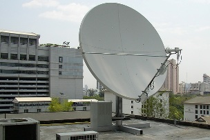
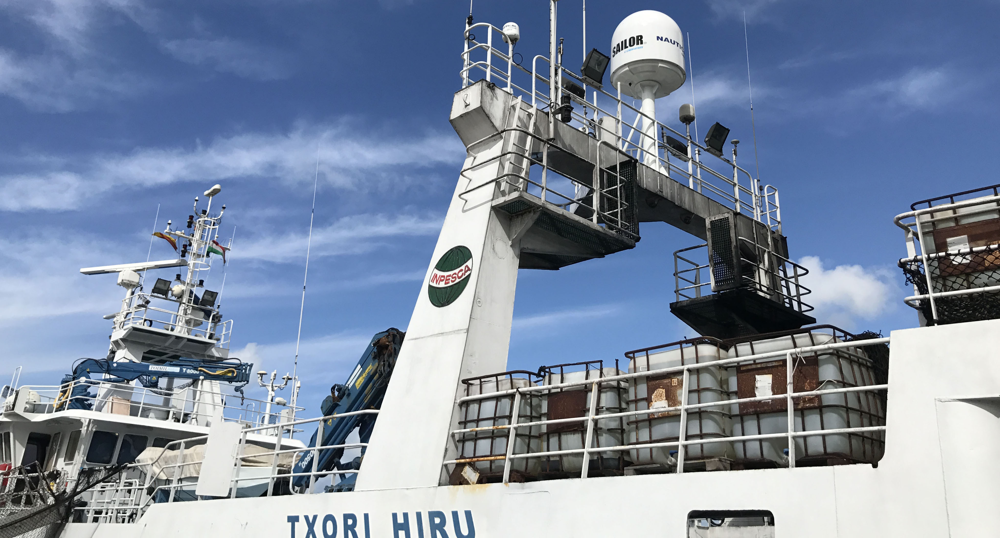
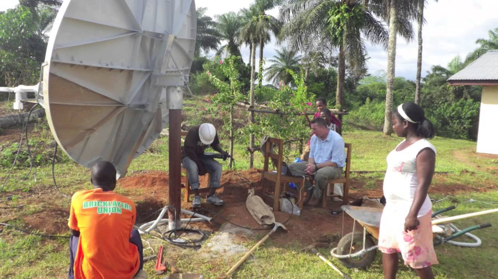

Technology
“Let’s go invent tomorrow instead of worrying about what happened yesterday.”
Steve Jobs
VSAT Installation and Maintainance services
Most breakdowns suffered by VSAT service providers are as a result of poor installation or lack of proper maintenance of the end systems. We at Blue Wave strive to ensure that our installations are done to the best possible standards as set by reputable bodies such as CAK, ITU and IEEE.

A fulfilled contract in Nairobi
All our VSAT installers are certified to carry out proactive and reactive maintenance on all types VSAT systems. These include C band, Ka band, and Ku band systems. We are able to offer installation and maintenance services anywhere in Kenya and in any part of Africa.
 One of our projects on a Ship. Our team in Namibia
Our installation and maintenance services are ideal for GSM operators, ISPs, security agencies,individual clients, etc
In general, our services encompass the following;
- Site Surveys.
- Equipment installation and configuration.
- Site measurements and tests.
- Ground support and troubleshooting.
- Proactive and reactive maintenance of VSAT systems.
- Consultancy services on VSAT connectivity.